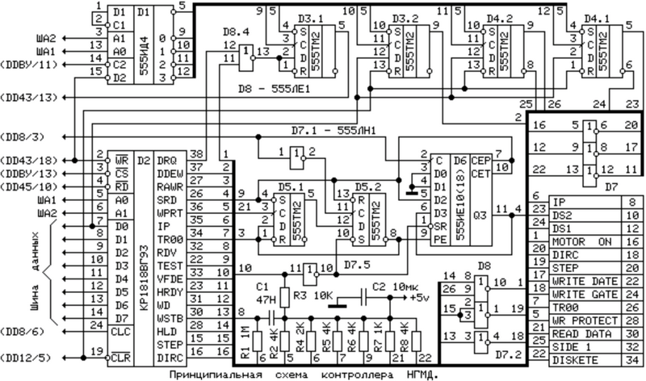
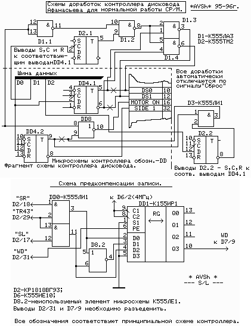
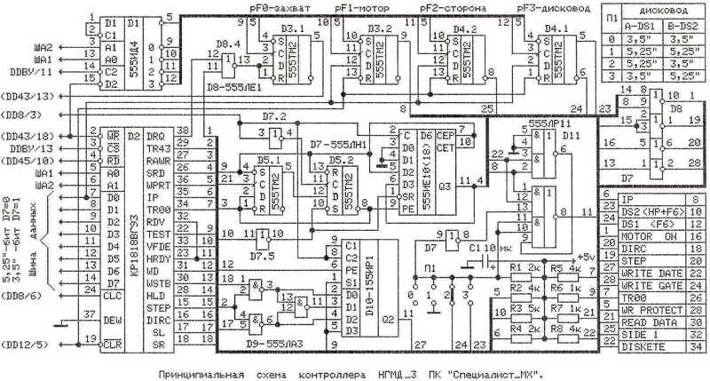
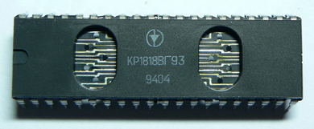
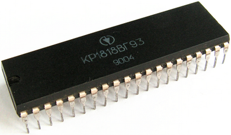
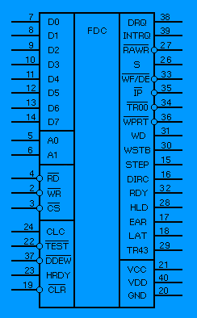

www.spetsialist-mx.ru
САЙТ О ПК "СПЕЦИАЛИСТ" И ЕГО КЛОНАХ
| |
|
| ГЛАВНАЯ | |
| МИКРОПРОЦЕССОР | |
| КОНТРОЛЛЕР НГМД | |
| ПАМЯТЬ | |
| ИНТЕРФЕЙСЫ | |
| КОНТРОЛЛЕР ЦВЕТА | |
| ПРОГРАММЫ | |
| ИГРЫ | |
| СПЕЦИАЛИСТ МХ2 | |
| ПЛИС | |
| ССЫЛКИ | |
| ОБРАТНАЯ СВЯЗЬ |
КОНТРОЛЛЕР ДИСКОВОДА ДЛЯ ПК "СПЕЦИАЛИСТ МХ"
Компьютер также был дополнен контроллером дисковода на микросхеме К1818ВГ93, контроллер допускал одновременное подключение 2 - х дисководов. Управление дисководами осуществлялось специальной программой  MX - DOS, которая дополняла основную операционную систему RAMFOS Леонида Николаевича Афанасьева. С введением контроллера дисковода отпадала необходимость пользоваться магнитофоном для сохранения программ.
MX - DOS, которая дополняла основную операционную систему RAMFOS Леонида Николаевича Афанасьева. С введением контроллера дисковода отпадала необходимость пользоваться магнитофоном для сохранения программ.

Доработки контроллера дисковода. Эти доработки необходимы для нормальной работы CP / M. Для успешного функционирования схем необходимо предварительно реализовать схему "правильной" регенерации К565РУ5.

А теперь общая схема контроллера дисковода с учётом доработок (схема кликтабельна).
{kind=link}
Более новая схема контроллера дисковода с поддержкой двух дисководов двух разных типов по размеру дискеты: 3,5 и 5,25 дюймов. С учётом того что большинство будет использовать современные 3,5 дюймовые дисководы из схемы можно изъять микросхемы D11 (К555ЛР11), D7.4 (К555ЛН1) и резистор R1. Всё это можно заменить одним элементов 2И или сборкой D9.3 + D7.4. На входы нужно подать сигналы шины 22 и 8, выход соединить с сигналом 11.

БИС КОНТРОЛЛЕРА ДИСКОВОДА К1818ВГ93
__
Микросхема КР1818ВГ93 представляет собой однокристалльное программируемое устройство, предназначенное для управления выводом информации из ЭВМ на гибкие магнитные диски и вводом информации из НГМД в ЭВМ. БИС обеспечивает программирование номеров дорожки, сектора и стороны диска, а также длины сектора, режимов поиска дорожки и установки магнитной головки (МГ) в исходное положение, режимов чтения или записи информации, скорости перемещения МГ.
Контроллер КР1818ВГ93 позволяет организовать автоматический контроль считываемой и записываемой информации по контрольному коду, записанному в конце индексного и информационного массивов. Индексный массив включает адресную метку, номер сектора, длину сектора, номер дорожки и номер стороны диска. Информационный массив содержит метку и непосредственно данные.
В режиме записи микросхема обеспечивает выдачу сигналов предкомпенсации записи в зависимости от кодов, представляющих информацию. Вывод информации из ЭВМ выполняется по сигналу "Запрос данных", формируемому микросхемой, а считывание определяется сигналами "Готовность" и "индексный импульс", выдаваемыми аппаратурной логикой НГМД.
Обмен информацией с ЭВМ происходит по 8 – разрядной двунаправленной шине данных. Запись информации на ГМД осуществляется с одинарной или удвоенной плотностью. Под одинарной плотностью подразумевается запись информации с частотной модуляцией, а под удвоенной – запись информации с модифицированной модуляцией.

D0...D7 - 8-ми разрядная двунаправленная шина данных;
A0, A1 - входные сигналы адреса определяют выбор соответсвующего регистра для приёма (передачи) информации;
CLC - сигнал тактовой частоты;
/TEST - при подаче на этот вход сигнала высокого уровня вырабатываются импульсы управления перемещением головки с повышенной частотой;
/DDEW - входной сигнал, указывающий с какой плотностью должны выполняться операции;
HRDY - входной сигнал, указывающий, что головка готова к работе (в рабочем положении);
/CLR - входной сигнал обеспечивает установку в исходное состояние;
/RD - входной сигнал обеспечивает вывод информации из выбранного регистра на шину данных;
/WR - входной сигнал обеспечивает запись информации с шины данных в выбранный регистр;
/CS - входной сигнал выбора микросхемы;
DRQ - выходной сигнал устанавливается в состояние низкого уровня, если данные считаны в ЭВМ или записаны из ЭВМ в регистр данных;
INTRQ -выходной сигнал устанавливаетсяв напряжение высокого уровня, если выпонена какая - либо команда, и напряжение низкого уровня, если выполнена команда или считан регистр состояния;
/RAWR - входной сигнал данных, считываемых с НГМД;
S - сихронизирующий тактовый сигнал, вырабатываемый из сигналов /RAWR;
/WF/DE - двунаправленная шина, используемая для обозначения ошибки записи и размещения выбора данных, поступающих от ЭВМ;
/IP - входной сигнал с НГМД, информирующий о том, что индексный импульс считан;
/TR00 - входной сигнал, информирующий о том, что головка установлена в исходное состояние;
/WPRT - входной сигнал запрещения записи на ГМД, низкий уровень сигнала прекращает запись;
WD - выходной сигнал записи данных на ГМД;
WSTB - выходной сигнал имеет высокий уровень на время записи информации на ГМД;
STEP - выходной импульс для перемещения головки на один шаг;
DIRC - выходной сигнал, указывающий направление перемещения головки: высокий - к центру ГМД, низкий - от центра;
RDY - входной сигнал, указывающий на готовность НГМД выполнять команды "Считывание" или "Запись";
HLD - выходной сигнал, управляющий головкой;
EAR - выходной сигнал, указывающий, что импульс данных WD должен быть сдвинут влево;
LAT - выходной сигнал, указывающий, что импульс данных WD должен быть сдвинут вправо;
TR43 - выходной сигнал, указывающий, что головка находится между дорожками 44...76;
VCC - питание +5 В;
VDD - питание +12 В;
GND - общий провод.